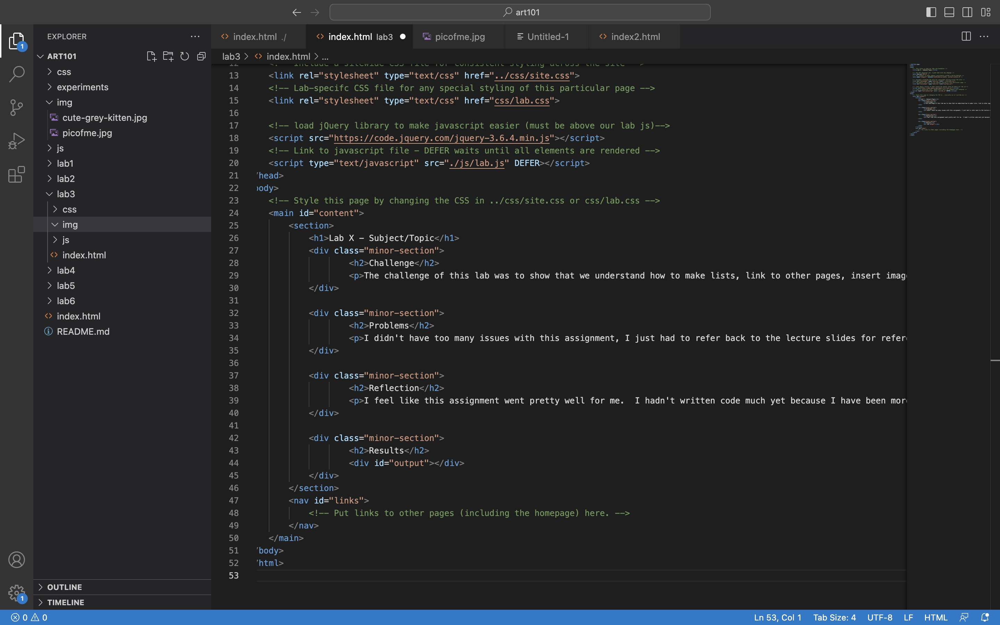
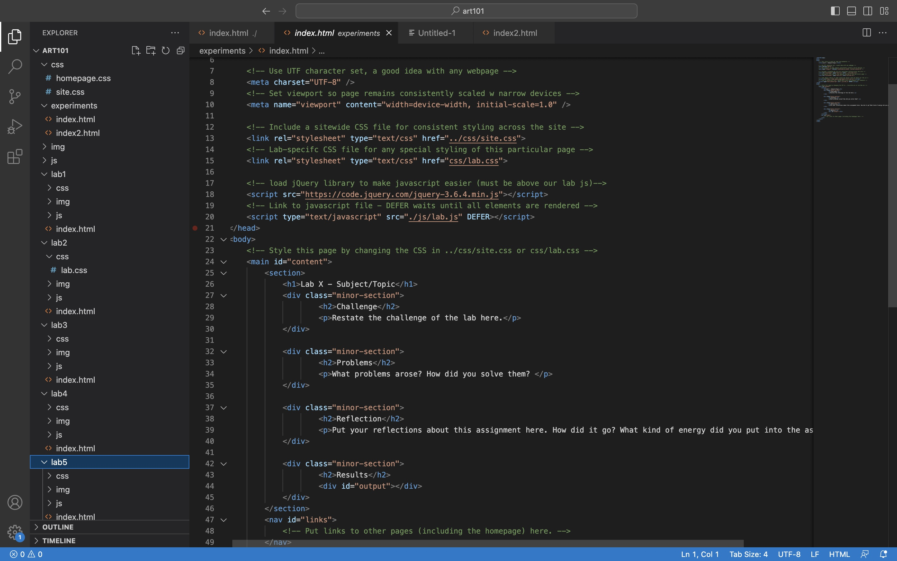
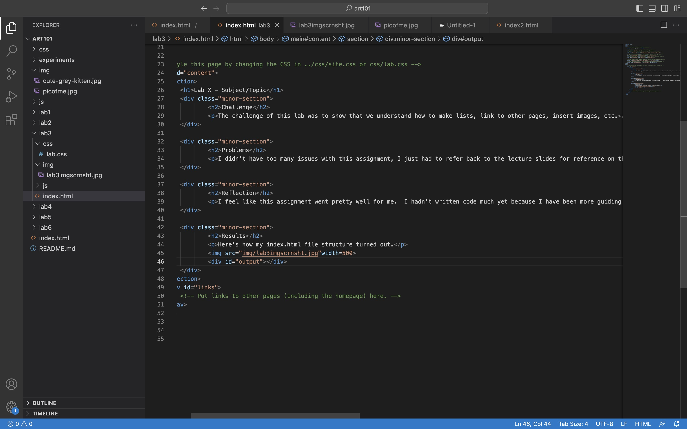
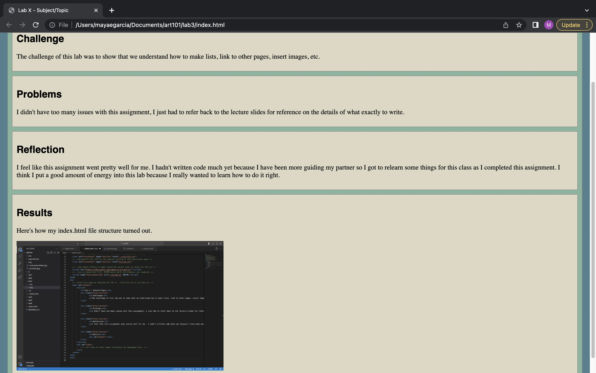
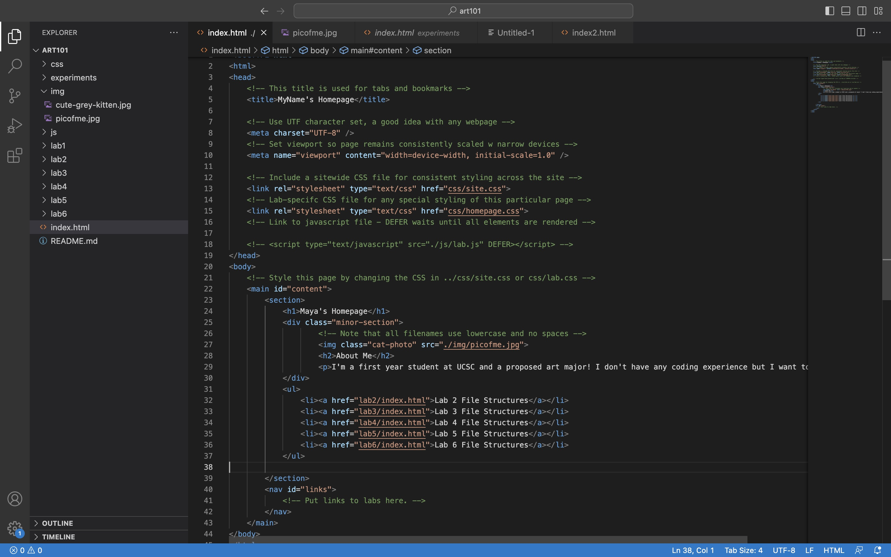
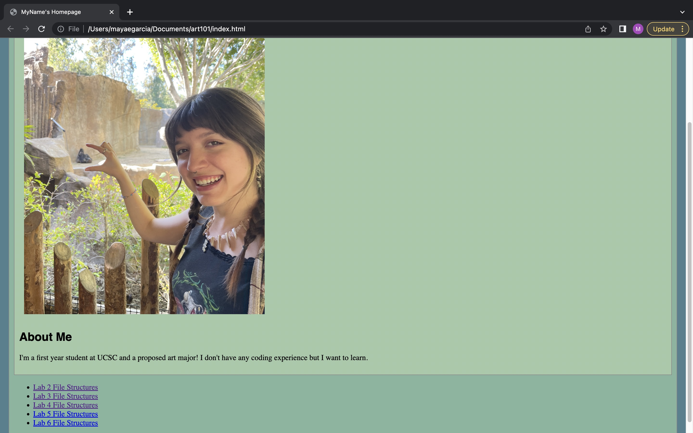

Lab X - Subject/Topic
Challenge
The challenge of this lab was to show that we understand how to make lists, link to other pages, insert images, etc.
Problems
I didn't have too many issues with this assignment, I just had to refer back to the lecture slides for reference on the details of what exactly to write.
Reflection
I feel like this assignment went pretty well for me. I hadn't written code much yet because I have been more guiding my partner so I got to relearn some things for this class as I completed this assignment. I think I put a good amount of energy into this lab because I really wanted to learn how to do it right.
Results
Here's how my index.html file structure turned out.
     